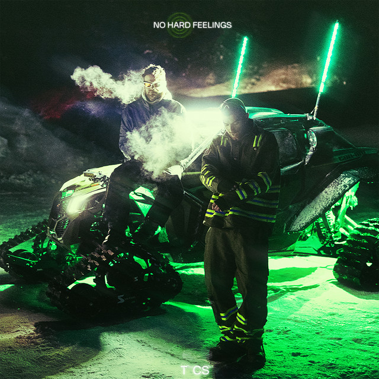
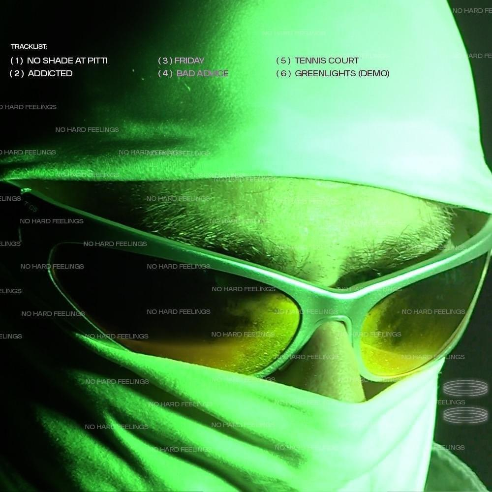
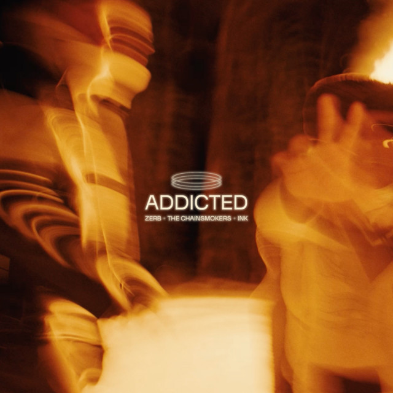
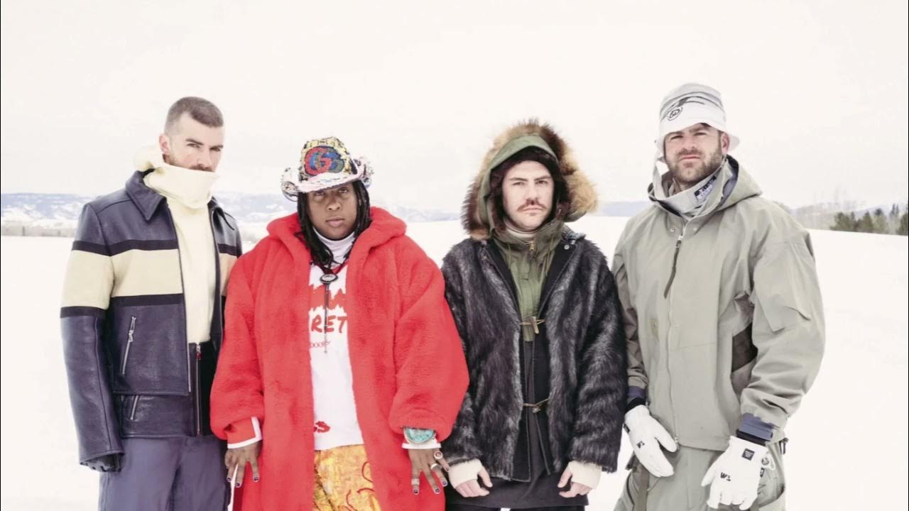
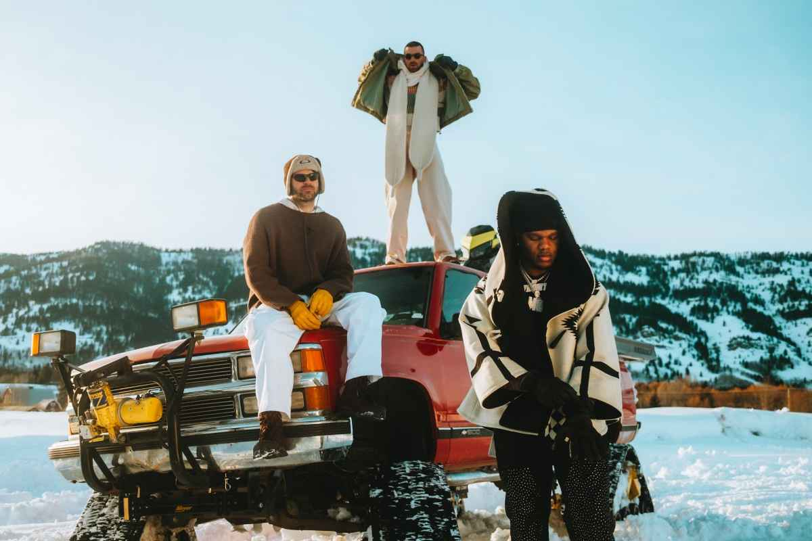

Inicio
The Chainsmokers presenta su nuevo EP titulado ‘No Hard Feelings’ el EP fue lanzado el 10 de mayo del 2024, siendo esta la primera parte de dos, ya que el dúo de Djs ha confirmado que esta es la primera parte de un algo aún más grande, ya veremos en el futuro que increíbles nuevas canciones y con qué sorpresas nos recibirán en un futuro no muy lejano forjando una una dirección clara y renovada.

Canciones
No shade at pitti
Este EP consta de seis canciones: "No shade at pitti", "Addicted", "Friday", "Bad advice", "Tennis court", "Green lights-demo", con un total de 18 minutos. Conteniendo generos como "house", "future bass", "pop", "synth pop", juntando sonidos nostalgicos y futuristicos.

Fotos de single
Addicted
Friday
Colaboraciónes
ZERB
FRIDAY
foto de grabaciones

foto de grabaciones